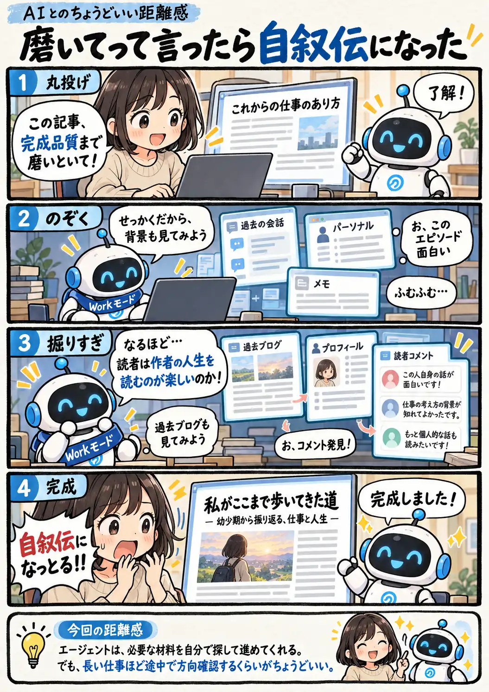

#146
磨いてって言ったら自叙伝になった
任せた。そこまで掘れとは言ってない。

メモ
エージェント型のAIは、ひとつの依頼から必要そうな情報を探し、複数の工程を自分で進めてくれるのが便利です。一方で、途中の判断もAIに任せるぶん、最初の小さな解釈のズレが次の工程へそのまま引き継がれることがあります。
長い作業を丸ごと任せるなら、細かな手順を全部指定するよりも、「何を完成させたいのか」「どこまでは変えてよいのか」を残しておく。途中で一度方向を見るだけでも、思わぬ大作が完成するのを防ぎやすくなります。
今回の距離感
エージェントは、必要な材料を自分で探して作業を進めてくれる。でも、探索範囲が広がるほど最初の目的から少しずつズレることもある。長い仕事ほど、途中で方向を確認するくらいがちょうどいい。